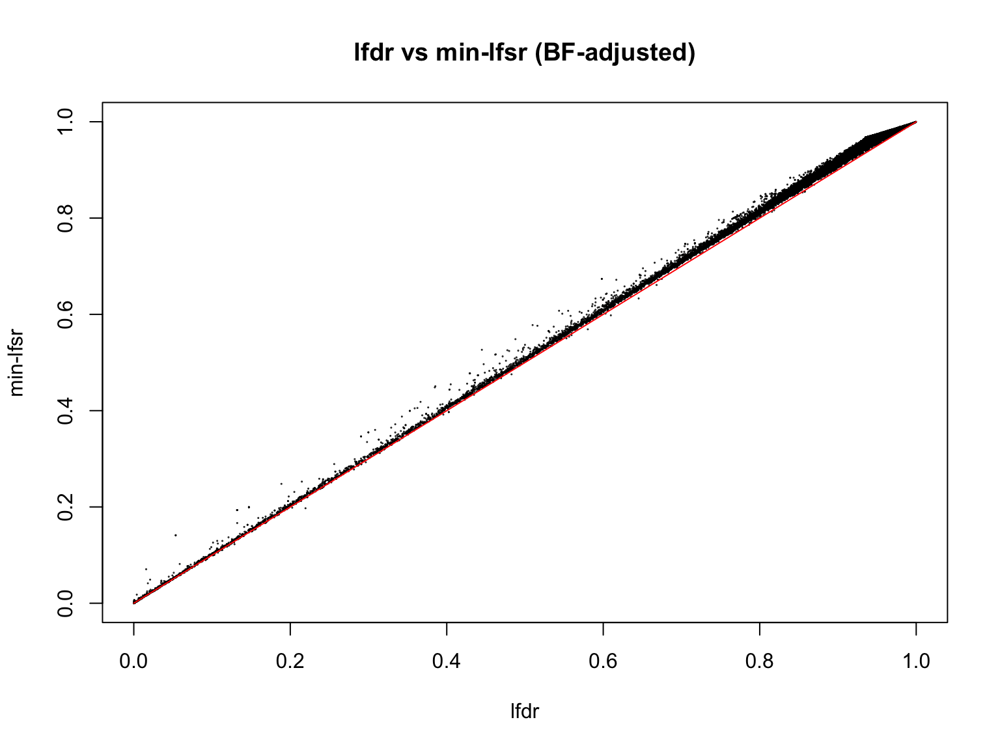
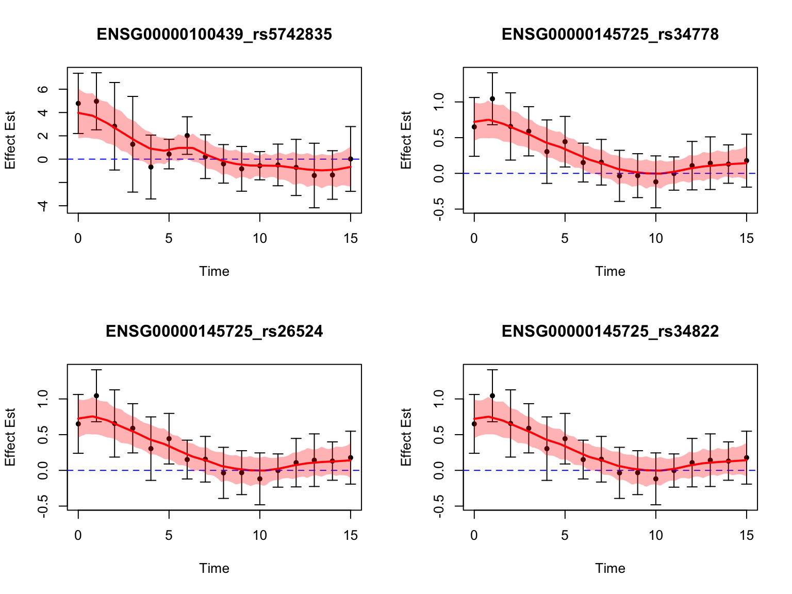

Dynamic eQTL analysis on real data
Ziang Zhang
2025-02-21
Last updated: 2025-02-22
Checks: 7 0
Knit directory: FASHresultsummary/
This reproducible R Markdown analysis was created with workflowr (version 1.7.1). The Checks tab describes the reproducibility checks that were applied when the results were created. The Past versions tab lists the development history.
Great! Since the R Markdown file has been committed to the Git repository, you know the exact version of the code that produced these results.
Great job! The global environment was empty. Objects defined in the global environment can affect the analysis in your R Markdown file in unknown ways. For reproduciblity it’s best to always run the code in an empty environment.
The command set.seed(20240507) was run prior to running
the code in the R Markdown file. Setting a seed ensures that any results
that rely on randomness, e.g. subsampling or permutations, are
reproducible.
Great job! Recording the operating system, R version, and package versions is critical for reproducibility.
Nice! There were no cached chunks for this analysis, so you can be confident that you successfully produced the results during this run.
Great job! Using relative paths to the files within your workflowr project makes it easier to run your code on other machines.
Great! You are using Git for version control. Tracking code development and connecting the code version to the results is critical for reproducibility.
The results in this page were generated with repository version 4def527. See the Past versions tab to see a history of the changes made to the R Markdown and HTML files.
Note that you need to be careful to ensure that all relevant files for
the analysis have been committed to Git prior to generating the results
(you can use wflow_publish or
wflow_git_commit). workflowr only checks the R Markdown
file, but you know if there are other scripts or data files that it
depends on. Below is the status of the Git repository when the results
were generated:
Ignored files:
Ignored: .DS_Store
Ignored: .Rhistory
Ignored: .Rproj.user/
Ignored: analysis/.DS_Store
Ignored: analysis/.Rhistory
Ignored: code/.DS_Store
Ignored: code/.Rhistory
Ignored: code/cpp/.DS_Store
Ignored: code/function/.DS_Store
Ignored: data/.DS_Store
Ignored: data/Iyer/.DS_Store
Ignored: data/expression_data/.DS_Store
Ignored: output/.DS_Store
Ignored: output/Iyer/.DS_Store
Ignored: output/example/.DS_Store
Ignored: output/example/figure/
Ignored: output/expression/.DS_Store
Ignored: output/simulation_pollution/.DS_Store
Ignored: output/simulation_pollution/figure/
Ignored: output/vQTL_correlated/
Ignored: thought_process
Untracked files:
Untracked: code/dynamic_eQTL_real/
Untracked: data/dynamic_eQTL_real/
Untracked: output/dynamic_eQTL_real/
Unstaged changes:
Modified: output/simulation_dynamic_eQTL/fash_fit_1.RData
Modified: output/simulation_dynamic_eQTL/fash_fit_1_noisy.RData
Modified: output/simulation_dynamic_eQTL/fash_fit_2.RData
Modified: output/simulation_dynamic_eQTL/fash_fit_2_noisy.RData
Modified: output/simulation_dynamic_eQTL/fash_fit_2_noisy_pen.RData
Note that any generated files, e.g. HTML, png, CSS, etc., are not included in this status report because it is ok for generated content to have uncommitted changes.
These are the previous versions of the repository in which changes were
made to the R Markdown (analysis/dynamic_eQTL_real.rmd) and
HTML (docs/dynamic_eQTL_real.html) files. If you’ve
configured a remote Git repository (see ?wflow_git_remote),
click on the hyperlinks in the table below to view the files as they
were in that past version.
| File | Version | Author | Date | Message |
|---|---|---|---|---|
| Rmd | 4def527 | Ziang Zhang | 2025-02-22 | workflowr::wflow_publish("analysis/dynamic_eQTL_real.rmd") |
knitr::opts_chunk$set(fig.width = 8, fig.height = 6)
library(fashr)
result_dir <- paste0(getwd(), "/output/dynamic_eQTL_real")
data_dir <- paste0(getwd(), "/data/dynamic_eQTL_real")
code_dir <- paste0(getwd(), "/code/dynamic_eQTL_real")
log_prec <- seq(0,10, by = 0.2)
fine_grid <- sort(c(0, exp(-0.5*log_prec)))Obtain the effect size of eQTLs
We use the processed (expression & genotype) data of Strober et.al, 2019 to perform the eQTL analysis.
For the association testing, we use a linear regression model for each gene-variant pair at each time point. Following the practice in Strober et.al, we adjust for the first three genetic PCs.
The code to perform this step can be found in the script
dynamic_eQTL_real/00_eQTLs.R from the code directory.
After this step, we have the effect size of eQTLs for each gene-variant pair at each time point, as well as its standard error.
Fitting FASH
To fit the FASH model on \(\{\beta_i(t_j), s_{ij}\}_{i\in N,j \in [16]}\), we consider fitting two FASH models:
A FASH model based on first order IWP (testing for dynamic eQTLs: \(H_0: \beta_i(t)=c\)).
A FASH model based on second order IWP (testing for nonlinear-dynamic eQTLs: \(H_0: \beta_i(t)=c_1+c_2t\)).
The code to perform this step can be found in the script
dynamic_eQTL_real/01_fash.R from the code directory.
We will directly load the fitted FASH models from the output directory.
load(paste0(result_dir, "/fash_fit1_all.Rdata"))
load(paste0(result_dir, "/fash_fit2_all.Rdata"))Let’s take a quick overview of the two fitted FASH models
fash_fit1Fitted fash Object
-------------------
Number of datasets: 1009173
Likelihood: gaussian
Number of PSD grid values: 52 (initial), 9 (non-trivial)
Order of Integrated Wiener Process (IWP): 1fash_fit2Fitted fash Object
-------------------
Number of datasets: 1009173
Likelihood: gaussian
Number of PSD grid values: 52 (initial), 8 (non-trivial)
Order of Integrated Wiener Process (IWP): 2As well as their estimated priors:
fash_fit1$prior_weights psd prior_weight
1 0.00000000 0.0287842263
2 0.02732372 0.1864703745
3 0.03337327 0.4745056157
4 0.06081006 0.1147849517
5 0.07427358 0.1589425113
6 0.10025884 0.0214257159
7 0.12245643 0.0121342052
8 0.16529889 0.0028396357
9 0.33287108 0.0001127636fash_fit2$prior_weights psd prior_weight
1 0.000000000 5.086111e-01
2 0.006737947 4.613356e-01
3 0.020241911 2.358783e-02
4 0.022370772 4.911592e-03
5 0.045049202 6.665396e-04
6 0.049787068 7.660696e-04
7 0.067205513 9.864533e-05
8 0.272531793 2.261151e-05We will load the datasets from the fitted FASH object:
datasets <- fash_fit1$fash_data$data_list
for (i in 1:length(datasets)) {
datasets[[i]]$SE <- fash_fit1$fash_data$S[[i]]
}
all_genes <- unique(sapply(strsplit(names(datasets), "_"), "[[", 1))The default models do not make use of any penalty when estimating \(\pi_0\), so might be vulnerable to model-misspecification.
We can take a look at how the estimated \(\pi_0\) changes with different penalty values.
First, for model with order 1:
load(paste0(result_dir, "/penalty_size.Rdata"))
pio_mom_1 <- mean(apply(fash_fit1$L_matrix, 1, which.max) == 1)
plot(penalty_size[-1], pi0[-1], type = "o", xlab = "Penalty size", ylab = "Estimated pi_0",
main = "Order = 1", ylim = c(0,1))
abline(h = pio_mom_1, col = "red", lty = 2)
The red dashed line represents the estimated \(\pi_0\) based on the MoM estimator, which is biased but more robust to model-misspecification. Let’s choose a penalty parameter that is not too large (relative to the sample size), but could produce a penalized MLE estimator that is close to the MoM estimator.
selected_penalty <- 20000
selected_penalty/length(datasets) # 0.01981821 percent of the data[1] 0.01981821Based on the selected penalty, we can update the FASH model:
fash_fit1_update <- fashr::fash_eb_est(L_matrix = fash_fit1$L_matrix, penalty = selected_penalty, grid = fine_grid)
fash_fit1_update$lfdr <- fash_fit1_update$posterior_weight[,1]
fash_fit1$prior_weights <- fash_fit1_update$prior_weight
fash_fit1$posterior_weights <- fash_fit1_update$posterior_weight
fash_fit1$lfdr <- fash_fit1_update$lfdrload(paste0(result_dir, "/fash_fit_all_updated.RData"))
fash_fit1_update$prior_weight psd prior_weight
1 0.00000000 0.4157160597
2 0.05502322 0.3851415654
3 0.06081006 0.1581860371
4 0.11080316 0.0182630299
5 0.12245643 0.0223050302
6 0.20189652 0.0002690632
7 0.33287108 0.0001192145Similarly, for model with order 2:
pio_mom_2 <- mean(apply(fash_fit2$L_matrix, 1, which.max) == 1)
plot(penalty_size2, pi02, type = "o",
xlab = "Penalty size", ylab = "Estimated pi_0",
main = "Order = 2")
abline(h = pio_mom_2, col = "red", lty = 2)
selected_penalty2 <- 5000
selected_penalty2/length(datasets) # 0.004954552[1] 0.004954552Update the FASH model:
fash_fit2_update <- fashr::fash_eb_est(L_matrix = fash_fit2$L_matrix, penalty = selected_penalty2, grid = fine_grid)
fash_fit2_update$lfdr <- fash_fit2_update$posterior_weight[,1]
fash_fit2$prior_weights <- fash_fit2_update$prior_weight
fash_fit2$posterior_weights <- fash_fit2_update$posterior_weight
fash_fit2$lfdr <- fash_fit2_update$lfdrfash_fit2_update$prior_weight psd prior_weight
1 0.00000000 7.452369e-01
2 0.01005184 1.773314e-01
3 0.01110900 7.029841e-02
4 0.03019738 4.379520e-03
5 0.03688317 2.493112e-03
6 0.06720551 2.384917e-04
7 0.27253179 2.218742e-05Detecting dynamic eQTLs
We will use the updated FASH model (1) to detect dynamic eQTLs.
alpha <- 0.05
test1 <- fdr_control(fash_fit1_update, alpha = alpha, plot = F)137573 datasets are significant at alpha level 0.05. Total datasets tested: 1009173. fash_highlighted1 <- test1$fdr_results$index[test1$fdr_results$FDR <= alpha]How many pairs are detected as dynamic eQTLs?
pairs_highlighted1 <- names(datasets)[fash_highlighted1]
length(pairs_highlighted1)[1] 137573length(pairs_highlighted1)/length(datasets)[1] 0.1363225How many unique genes are detected?
genes_highlighted1 <- unique(sapply(strsplit(pairs_highlighted1, "_"), "[[", 1))
length(genes_highlighted1)[1] 5315length(genes_highlighted1)/length(all_genes)[1] 0.8354291Visualize top-ranked pairs:

Detecting nonlinear dynamic eQTLs
We will use the updated FASH model (2) to detect nonlinear dynamic eQTLs.
test2 <- fdr_control(fash_fit2_update, alpha = alpha, plot = F)4428 datasets are significant at alpha level 0.05. Total datasets tested: 1009173. fash_highlighted2 <- test2$fdr_results$index[test2$fdr_results$FDR <= alpha]How many pairs are detected as nonlinear dynamic eQTLs?
pairs_highlighted2 <- names(datasets)[fash_highlighted2]
length(pairs_highlighted2)[1] 4428length(pairs_highlighted2)/length(datasets)[1] 0.004387751How many unique genes are detected?
genes_highlighted2 <- unique(sapply(strsplit(pairs_highlighted2, "_"), "[[", 1))
length(genes_highlighted2)[1] 648length(genes_highlighted2)/length(all_genes)[1] 0.1018548Visualize top-ranked pairs:
Comparing with Strober et.al
We will compare the detected dynamic eQTLs with the results from Strober et.al.
── Attaching core tidyverse packages ──────────────────────── tidyverse 2.0.0 ──
✔ dplyr 1.1.4 ✔ readr 2.1.5
✔ forcats 1.0.0 ✔ stringr 1.5.1
✔ ggplot2 3.5.1 ✔ tibble 3.2.1
✔ lubridate 1.9.3 ✔ tidyr 1.3.1
✔ purrr 1.0.2
── Conflicts ────────────────────────────────────────── tidyverse_conflicts() ──
✖ dplyr::filter() masks stats::filter()
✖ dplyr::lag() masks stats::lag()
✖ tidyr::unite() masks ggVennDiagram::unite()
ℹ Use the conflicted package (<http://conflicted.r-lib.org/>) to force all conflicts to become errorsLet’s take a look at the overlap between the two methods used in Strober et.al and FASH (order 1):
gene_sets <- list(
"Strober (Nonlinear)" = genes_highlighted_strober_nonlinear,
"Strober (Linear)" = genes_highlighted_strober_linear,
"FASH (1)" = genes_highlighted1
)
ggVennDiagram(gene_sets, label = "both") +
scale_fill_gradient(low="grey90",high = "red") +
theme(legend.position = "right") # Move legend to the right
There is a large number of genes only detected by FASH (order 1). Let’s take a look at the 4 pairs that are least significant from FASH:
gene_fashr_only <- setdiff(genes_highlighted1, union(genes_highlighted_strober_nonlinear, genes_highlighted_strober_linear))
## produce four plots for four genes
par(mfrow = c(2,2))
for (i in 1:4) {
selected_gene <- gene_fashr_only[i]
pairs_of_selected_gene <- grep(selected_gene, pairs_highlighted1, value = T)
selected_indices <- which(names(datasets) %in% pairs_of_selected_gene)
selected_index <- selected_indices[which(fash_fit1$lfdr[selected_indices] == min(fash_fit1$lfdr[selected_indices]))][1]
fitted_result <- predict(fash_fit1,
index = selected_index,
smooth_var = seq(0, 15, by = 0.1))
plot(
datasets[[selected_index]]$x,
datasets[[selected_index]]$y,
pch = 20,
col = "black",
xlab = "Time",
ylab = "Effect Est",
main = paste0(names(datasets)[selected_index]),
ylim = c(
min(datasets[[selected_index]]$y - 2 * datasets[[selected_index]]$SE),
max(datasets[[selected_index]]$y + 2 * datasets[[selected_index]]$SE)
)
)
arrows(
datasets[[selected_index]]$x,
datasets[[selected_index]]$y - 2 * datasets[[selected_index]]$SE,
datasets[[selected_index]]$x,
datasets[[selected_index]]$y + 2 * datasets[[selected_index]]$SE,
length = 0.05,
angle = 90,
code = 3,
col = "black"
)
lines(fitted_result$x,
fitted_result$mean,
col = "red",
lwd = 2)
abline(h = mean(datasets[[selected_index]]$y), col = "blue", lty = 2)
polygon(
c(fitted_result$x, rev(fitted_result$x)),
c(fitted_result$lower, rev(fitted_result$upper)),
col = rgb(1, 0, 0, 0.3),
border = NA
)
}
par(mfrow = c(1,1))Let’s also look at the genes that were missed by FASH, but detected by Strober et.al. In this case, we will pick the most significant pair for each gene in FASH:
gene_missed <- setdiff(union(genes_highlighted_strober_nonlinear, genes_highlighted_strober_linear), genes_highlighted1)
## produce four plots for four genes
par(mfrow = c(2,2))
for (i in 1:4) {
selected_gene <- gene_missed[i]
pairs_of_selected_gene <- grep(selected_gene, names(datasets), value = T)
selected_indices <- which(names(datasets) %in% pairs_of_selected_gene)
selected_index <- selected_indices[which(fash_fit1$lfdr[selected_indices] == min(fash_fit1$lfdr[selected_indices]))][1]
fitted_result <- predict(fash_fit1,
index = selected_index,
smooth_var = seq(0, 15, by = 0.1))
plot(
datasets[[selected_index]]$x,
datasets[[selected_index]]$y,
pch = 20,
col = "black",
xlab = "Time",
ylab = "Effect Est",
main = paste0(names(datasets)[selected_index]),
ylim = c(
min(datasets[[selected_index]]$y - 2 * datasets[[selected_index]]$SE),
max(datasets[[selected_index]]$y + 2 * datasets[[selected_index]]$SE)
)
)
arrows(
datasets[[selected_index]]$x,
datasets[[selected_index]]$y - 2 * datasets[[selected_index]]$SE,
datasets[[selected_index]]$x,
datasets[[selected_index]]$y + 2 * datasets[[selected_index]]$SE,
length = 0.05,
angle = 90,
code = 3,
col = "black"
)
lines(fitted_result$x,
fitted_result$mean,
col = "red",
lwd = 2)
abline(h = mean(datasets[[selected_index]]$y), col = "blue", lty = 2)
polygon(
c(fitted_result$x, rev(fitted_result$x)),
c(fitted_result$lower, rev(fitted_result$upper)),
col = rgb(1, 0, 0, 0.3),
border = NA
)
}
par(mfrow = c(1,1))Even the most significant pairs from FASH for each gene do not show a clear pattern of dynamic eQTLs. It is kind of expected that FASH won’t conclude with high confidence that these genes have dynamic eQTLs.
Finally, let’s take a look how these pairs with significant non-linear dynamic effects identified by FASH (order = 2) fit into the Venn diagram:
gene_sets <- list(
"Strober (Nonlinear)" = genes_highlighted_strober_nonlinear,
"Strober (Linear)" = genes_highlighted_strober_linear,
"FASH (1)" = genes_highlighted1,
"FASH (2)" = genes_highlighted2
)
ggVennDiagram(gene_sets, label = "both") +
scale_fill_gradient(low="grey90",high = "red") +
theme(legend.position = "right") # Move legend to the right
There is a large number of genes that were identified in FASH(1) or in Strober et.al, but not in FASH(2).
Let’s look at some examples:
# genes that are only missed by FASH(2)
gene_missed_by_fash2_only <- setdiff(intersect(intersect(genes_highlighted1, genes_highlighted_strober_linear), genes_highlighted_strober_nonlinear), genes_highlighted2)
## produce four plots for four genes
par(mfrow = c(2,2))
for (i in 1:4) {
selected_gene <- gene_missed_by_fash2_only[i]
pairs_of_selected_gene <- grep(selected_gene, pairs_highlighted1, value = T)
selected_indices <- which(names(datasets) %in% pairs_of_selected_gene)
selected_index <- selected_indices[which(fash_fit2$lfdr[selected_indices] == min(fash_fit2$lfdr[selected_indices]))][1]
fitted_result <- predict(fash_fit2,
index = selected_index,
smooth_var = seq(0, 15, by = 0.1))
plot(
datasets[[selected_index]]$x,
datasets[[selected_index]]$y,
pch = 20,
col = "black",
xlab = "Time",
ylab = "Effect Est",
main = paste0(names(datasets)[selected_index]),
ylim = c(
min(datasets[[selected_index]]$y - 2 * datasets[[selected_index]]$SE),
max(datasets[[selected_index]]$y + 2 * datasets[[selected_index]]$SE)
)
)
arrows(
datasets[[selected_index]]$x,
datasets[[selected_index]]$y - 2 * datasets[[selected_index]]$SE,
datasets[[selected_index]]$x,
datasets[[selected_index]]$y + 2 * datasets[[selected_index]]$SE,
length = 0.05,
angle = 90,
code = 3,
col = "black"
)
lines(fitted_result$x,
fitted_result$mean,
col = "red",
lwd = 2)
# add regression line
abline(lm(datasets[[selected_index]]$y ~ datasets[[selected_index]]$x, weights = 1/datasets[[selected_index]]$SE), col = "blue", lty = 2)
polygon(
c(fitted_result$x, rev(fitted_result$x)),
c(fitted_result$lower, rev(fitted_result$upper)),
col = rgb(1, 0, 0, 0.3),
border = NA
)
}
par(mfrow = c(1,1))Again, even the most significant pairs for each gene do not show a clear pattern of nonlinear effects. So it is not surprising that FASH(2) did not detect these genes as having nonlinear dynamic eQTLs.
Classifying dynamic eQTLs
Following the definition in Strober et.al, we will classify the detected dynamic eQTLs into different categories:
Early: eQTLs with strongest effect during the first three days: \(\max_{t\leq3} |\beta(t)| - \max_{t> 3} |\beta(t)| > 0\).
Late: eQTLs with strongest effect during the last four days: \(\max_{t\geq 12} |\beta(t)| - \max_{t< 12} |\beta(t)| > 0\).
Middle: eQTLs with strongest effect during days 4-11: \(\max_{4\leq t\leq 11} |\beta(t)| - \max_{t> 11 | t< 4} |\beta(t)| > 0\).
Switch: eQTLs with effect sign switch during the time course: ${(t)+,(t)-}-c $ where \(c\) is a threshold that we set to 0.25 (which means with two alleles, the maximal difference of effect size is at least \(\geq 2\times\min\{\max\beta(t)^+,\max\beta(t)^-\}\times2 \geq 2 \times 0.25 \times 2 = 1\)).
We first take a look at the significant pairs detected by FASH (order 1), and classify them based on the false sign rate (lfsr):
smooth_var_refined = seq(0,15, by = 0.1)
functional_early <- function(x){
max(abs(x[smooth_var_refined <= 3])) - max(abs(x[smooth_var_refined > 3]))
}
testing_early_dyn <- testing_functional(functional_early,
lfsr_cal = function(x){mean(x <= 0)},
fash = fash_fit1,
indices = fash_highlighted1,
smooth_var = smooth_var_refined)How many pairs are classified as early dynamic eQTLs?
load(paste0(result_dir, "/classify_dyn_eQTLs.RData"))
early_indices <- testing_early_dyn$indices[testing_early_dyn$cfsr <= alpha]
length(early_indices)[1] 758How many unique genes?
early_genes <- unique(sapply(strsplit(names(datasets)[early_indices], "_"), "[[", 1))
length(early_genes)[1] 130Let’s take a look at the top-ranked early dynamic eQTLs:
It is evident that these variants have largest \(|\beta(t)|\) during the first three days.
How many pairs are classified as middle dynamic eQTLs?
functional_middle <- function(x){
max(abs(x[smooth_var_refined <= 11 & smooth_var_refined >= 4])) - max(abs(x[smooth_var_refined > 11]), abs(x[smooth_var_refined < 4]))
}
testing_middle_dyn <- testing_functional(functional_middle,
lfsr_cal = function(x){mean(x <= 0)},
fash = fash_fit1,
indices = fash_highlighted1,
num_cores = num_cores,
smooth_var = smooth_var_refined)middle_indices <- testing_middle_dyn$indices[testing_middle_dyn$cfsr <= alpha]
length(middle_indices)[1] 421How many unique genes?
middle_genes <- unique(sapply(strsplit(names(datasets)[middle_indices], "_"), "[[", 1))
length(middle_genes)[1] 86Take a look at their results:
par(mfrow = c(2,2))
for (i in 1:4) {
selected_index <- sample(middle_indices, 1)
fitted_result <- predict(fash_fit1,
index = selected_index,
smooth_var = seq(0, 15, by = 0.1))
plot(
datasets[[selected_index]]$x,
datasets[[selected_index]]$y,
pch = 20,
col = "black",
xlab = "Time",
ylab = "Effect Est",
main = paste0(names(datasets)[selected_index]),
ylim = c(
min(datasets[[selected_index]]$y - 2 * datasets[[selected_index]]$SE),
max(datasets[[selected_index]]$y + 2 * datasets[[selected_index]]$SE)
)
)
arrows(
datasets[[selected_index]]$x,
datasets[[selected_index]]$y - 2 * datasets[[selected_index]]$SE,
datasets[[selected_index]]$x,
datasets[[selected_index]]$y + 2 * datasets[[selected_index]]$SE,
length = 0.05,
angle = 90,
code = 3,
col = "black"
)
lines(fitted_result$x,
fitted_result$mean,
col = "red",
lwd = 2)
abline(h = 0, lty = 2, col = "blue")
polygon(
c(fitted_result$x, rev(fitted_result$x)),
c(fitted_result$lower, rev(fitted_result$upper)),
col = rgb(1, 0, 0, 0.3),
border = NA
)
}
par(mfrow = c(1,1))How many pairs are classified as late dynamic eQTLs?
functional_late <- function(x){
max(abs(x[smooth_var_refined >= 12])) - max(abs(x[smooth_var_refined < 12]))
}
testing_late_dyn <- testing_functional(functional_late,
lfsr_cal = function(x){mean(x <= 0)},
fash = fash_fit1,
indices = fash_highlighted1,
num_cores = num_cores,
smooth_var = smooth_var_refined)How many pairs and how many unique genes are classified as late dynamic eQTLs?
late_indices <- testing_late_dyn$indices[testing_late_dyn$cfsr <= alpha]
length(late_indices)[1] 905late_genes <- unique(sapply(strsplit(names(datasets)[late_indices], "_"), "[[", 1))
length(late_genes)[1] 263Let’s take a look at the top-ranked late dynamic eQTLs:

How many pairs are classified as switch dynamic eQTLs?
switch_threshold <- 0.25
functional_switch <- function(x){
# compute the radius of x, measured by deviation from 0 from below and from above
x_pos <- x[x > 0]
x_neg <- x[x < 0]
if(length(x_pos) == 0 || length(x_neg) == 0){
return(0)
}
min(max(abs(x_pos)), max(abs(x_neg))) - switch_threshold
}
testing_switch_dyn <- testing_functional(functional_switch,
lfsr_cal = function(x){mean(x <= 0)},
fash = fash_fit1,
indices = fash_highlighted1,
num_cores = num_cores,
smooth_var = smooth_var_refined)How many pairs and how many unique genes are classified as switch dynamic eQTLs?
switch_indices <- testing_switch_dyn$indices[testing_switch_dyn$cfsr <= alpha]
length(switch_indices)[1] 156switch_genes <- unique(sapply(strsplit(names(datasets)[switch_indices], "_"), "[[", 1))
length(switch_genes)[1] 53Let’s take a look at the top-ranked switch dynamic eQTLs:

sessionInfo()R version 4.3.1 (2023-06-16)
Platform: aarch64-apple-darwin20 (64-bit)
Running under: macOS Monterey 12.7.4
Matrix products: default
BLAS: /Library/Frameworks/R.framework/Versions/4.3-arm64/Resources/lib/libRblas.0.dylib
LAPACK: /Library/Frameworks/R.framework/Versions/4.3-arm64/Resources/lib/libRlapack.dylib; LAPACK version 3.11.0
locale:
[1] en_US.UTF-8/en_US.UTF-8/en_US.UTF-8/C/en_US.UTF-8/en_US.UTF-8
time zone: America/Chicago
tzcode source: internal
attached base packages:
[1] stats graphics grDevices utils datasets methods base
other attached packages:
[1] lubridate_1.9.3 forcats_1.0.0 stringr_1.5.1
[4] dplyr_1.1.4 purrr_1.0.2 readr_2.1.5
[7] tidyr_1.3.1 tibble_3.2.1 ggplot2_3.5.1
[10] tidyverse_2.0.0 ggVennDiagram_1.5.2 fashr_0.1.1
[13] workflowr_1.7.1
loaded via a namespace (and not attached):
[1] gtable_0.3.6 TMB_1.9.15 xfun_0.48
[4] bslib_0.8.0 processx_3.8.4 lattice_0.22-6
[7] callr_3.7.6 tzdb_0.4.0 numDeriv_2016.8-1.1
[10] vctrs_0.6.5 tools_4.3.1 ps_1.8.0
[13] generics_0.1.3 parallel_4.3.1 fansi_1.0.6
[16] highr_0.11 pkgconfig_2.0.3 Matrix_1.6-4
[19] lifecycle_1.0.4 farver_2.1.2 compiler_4.3.1
[22] git2r_0.33.0 munsell_0.5.1 getPass_0.2-4
[25] httpuv_1.6.15 htmltools_0.5.8.1 sass_0.4.9
[28] yaml_2.3.10 later_1.3.2 pillar_1.9.0
[31] jquerylib_0.1.4 whisker_0.4.1 cachem_1.1.0
[34] tidyselect_1.2.1 digest_0.6.37 stringi_1.8.4
[37] LaplacesDemon_16.1.6 labeling_0.4.3 rprojroot_2.0.4
[40] fastmap_1.2.0 grid_4.3.1 colorspace_2.1-1
[43] cli_3.6.3 magrittr_2.0.3 utf8_1.2.4
[46] withr_3.0.2 scales_1.3.0 promises_1.3.0
[49] timechange_0.3.0 rmarkdown_2.28 httr_1.4.7
[52] hms_1.1.3 evaluate_1.0.1 knitr_1.48
[55] rlang_1.1.4 Rcpp_1.0.13-1 BayesGP_0.1.3
[58] glue_1.8.0 rstudioapi_0.16.0 jsonlite_1.8.9
[61] R6_2.5.1 fs_1.6.4